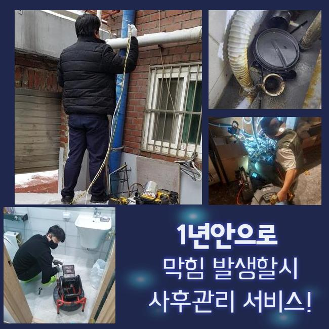
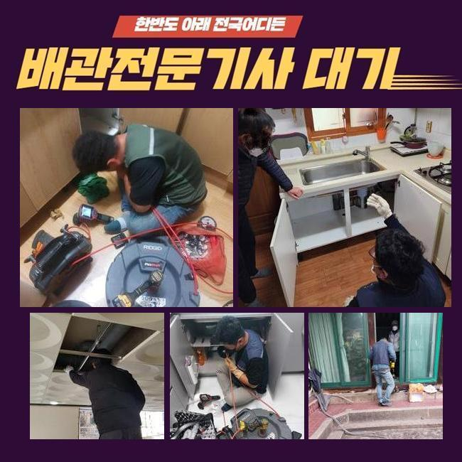
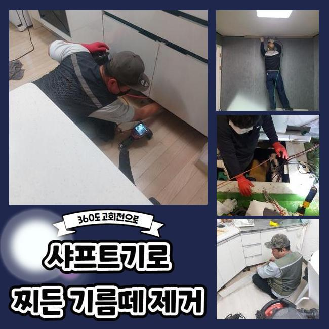
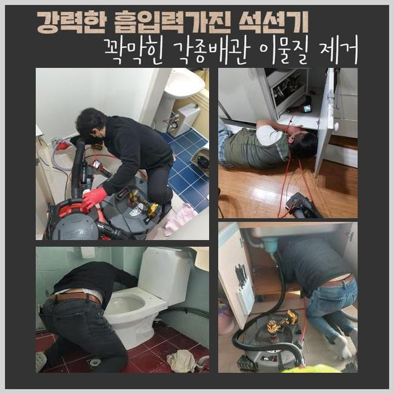
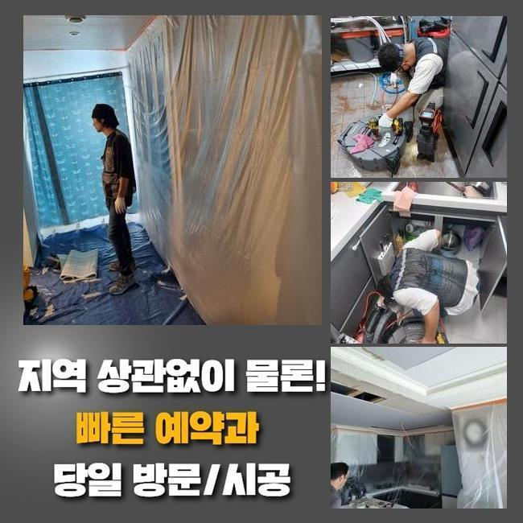

🏠 안성 봉남동싱크대배수구역류 양성면 악취차단 누수탐지
안성 남동 싱크대막힘 전문 시공 후기

📋 작업 개요
- 위치: 안성 남동, 남동, 안성
- 서비스 유형: 싱크대막힘, 하수구막힘, 배관막힘, 누수수리, 역류해결, 뚫는업체, 배관청소, 고압세척, 악취차단
- 작업 일시: 2025. 4. 9. 15:05
- 업체명: 하수구수사대 (010-5615-2118)
🔍 문제 상황
안성 봉남동싱크대배수구역류 양성면 악취차단 누수탐지
수돗물을 쓰다보면 나도 모르게 서서히 배관 통로에 지저분한 것들이 층을 이루고 불어날 수 있어요
오래 머무를 시에는 뻑뻑한 밀집도로 말라붙을 수 있어서 쉽게 제거되기 어려워요
벽체에 부착되어 있는 이물질을 처리해 내고자 배관에 무리를 주다가는 배관에 하자가 생기는 상황 등 복잡해질 수 있어요
오류가 확실히 파악되는 상태라고 하더라도 배관용으로 출시된 장비를 접목해서 작업을 해야만 순조로우면서도 확실히 깔끔하게 배수관을 만들 수 있어요
스스로 뚫어보려고 애쓴다면 전체적인 문제를 모조리 잡아내기 힘들고 큰 보람이 없을 것입니다
이번에 갔던 곳은 다수의 가구원이 계신 곳으로 하수가 막히고 범람해서 악취까지 진동을 하게 만들어 서둘러 와줄 수 없겠냐고 연락 걸어주신 장소였습니다
빠르게 상황을 판단한 뒤에 작업에 들어가는 도구를 갖고 초인종을 눌렀습니다
문제를 간략하게 듣고서 확인하니 물이 고인 바닥의 배수구에서 심지어 물이 거슬러 올라왔습니다
연락을 하시기 이전에 셀프 클리너를 부어서 관통해보려 하셨지만 크게 개선되지는 않고 변화가 없었다고 합니다

🔎 원인 분석
💡 전문가 진단: 정밀 진단 장비를 사용하여 슬러지의 고착 여부를 판명하고 타격/세척 작업을 실시했습니다.
오염된 하수까지 범람하다보니 악취까지 상당해서 벌레가 생길까 조마조마하며 정상적인 생활이 힘들다고 호소하셨어요
하수구 고장을 확실하게 제거하는 게 목적이라면 내부에 자리한 어떤 문제로 하수의 소통 장애가 형성된 것인지 확실하게 원인 규명을 해줘야 합니다
정확도를 높이고자 빠지지 않고 소지한 내시경을 우선 배치하여 관로 안을 분석했는데요
내시경이 비춰주는 화면을 보며 무슨 문제인지 판별해 보았더니 배관 벽체의 곳곳에서 유지가 가득 쌓여있는 물질이 통수의 장애가 됐단 걸 추정할 수 있었습니다
하나의 덩어리화가 된 압축된 유분조직을 억지로 분해하려 한다면 배관 표면에 마모가 나타날 지도 모릅니다
이물질 특성에 따라 제거해주는 전문 장치를 쓰는 편이 합리적인 수단입니다
내시경 조사를 하며 인지한 배관 관련 내용을 투명하게 공개를 해드리고 청소를 돕는 정비 기기를 접목해서 시공을 이어갔습니다
고압수를 통한 하수구 정화가 진행됐고 상당 부분 깨끗하게 만들고서 계속해서 진행하는 중이던 배관 카메라의 도움으로 변화한 컨디션을 체크했습니다
물이 소량씩 배출되는 걸 감지했지만 아직까지는 작업이 남아 있는 상황이어서 계속해서 진행하는 중이던 세척을 계속해 나갔습니다
고형물이 분리가 되고 시원스럽게 길이 열렸음을 여러차례 검증하고 나서 작업을 마무리 짓게 되었습니다

🔧 작업 과정
끝났다고 말씀드리기 전에 현황을 둘러봤더니 정체되어 있던 유분층들이 전량 청소가 완료되어 배수로가 깔끔하게 정리된 결과물을 받아보게 됐습니다
파이프라인의 사이에서 강하게 응고되어 있었던 기름 덩어리들이 초반에는 대단했는데 다른 세부적인 기기들을 추가 이용하지 않아도 해결책이 마련됐기에 소요시간이 많이 줄었네요
흐물거리는 슬러지 덩어리가 아니라 석회때문에 흐름의 차단이 유발된 상황이었다면 가벼운 시공만으로는 끝내기 힘들어요
커다란 석회 침전물이 방해하고 있는 현장이라면 장비를 마구 돌려서는 안 되고 결합된 석회가 풀릴 때까지 연화제를 넣어야 합니다
석회 해체용으로 나온 액상을 주입한 뒤에 시간을 두면 거품이 부풀어 오르는데 물을 조금씩 내려보내며 습기를 더한다면 화학 반응이 일어나면서 몰랑하게 변화합니다
백화 제거제는 일반 마트나 가게에서 간편히 확보할 수 없으니 심상치 않은 물질이 끼인 걸 인지했다면 필히 하수구 전문 서비스를 받아야만 재발 없이 안정화를 할 수 있습니다
관로 청소를 해주는 액체로 통수를 내보려는 시도를 하시는데 석회가 유발하는 상태면 시중의 제품군으로는 미처 해결하지 못해요
하수관의 불통이 빚어지는 사유는 짐작하기 힘들기 때문에 섣불리 행동하기 보다는 먼저 내시경을 안으로 넣어서 봉쇄된 곳을 먼저 평가해야 정확도 높게 배수관을 만들 수 있어요
도구 없이 봐서는 많은 배관들이 결합된 배수시스템의 형상을 이해하기는 다소 어렵습니다
내시경 기기를 바탕으로 상태를 점검하는 것이 토대가 되어야 할 것입니다
하수구가 고장나는 일은 갑자기 생기는 것이 아니고 장기적으로 작동하는 중에 이물질과 더러운 노폐물이 꾸준히 쌓이게 되어 견고한 결합체로 진화할 수 있습니다
아예 막혀버리지 않게 경각심을 가지고 쓰는 것이 올바를텐데 예시로 일정한 시기마다 온수를 하수구 구멍에 부으면서 자리를 잡으려는 오물들이 딱딱하게 말라붙지 않도록 간헐적으로 희석시켜주세요
사실 초반부터 찌꺼기가 깊숙이 자리하지 않도록 배수구 덮개나 필터를 구멍에 장착하는 것이 바람직한 예방책 중 하나입니다!
평범한 가정집이거나 단체 시설이나 센터 등 수돗물을 활용한다면 예기치 않은 하수구 중단 현상이 나타날 수 있어요
유독 배출이 느려진 것을 목격하신 분이시라면 악화되기 이전에 빠른 뚫음을 해주어야 하는데요
막힌 상황이 지속된다면 하수가 울컥 쏟아져 나오며 벌레나 악취와 같은 사태까지 이르게 됩니다


✅ 작업 완료
역행이 한번 생겨버리면 아랫집까지도 손실이 벌어질 수 있는데다가 피해를 수습하기 위한 금액도 윗 집에서 책임져야 할 것입니다
애초에 관로가 오염되지 않도록 각별히 검열하면서 사용 하셔야 부담이 적을 겁니다
세심하게 하수구 관리 시설물을 이용하신다고 해도 시간이 오래 된다면 막힘 사태가 도래할 수 있습니다!
막연하게 힘줘서 뚫지 마시고 저희에게 고장난 하수구에 대한 수리를 요청주시면 됩니다!


⚠️ 베란다 누수 및 방수 관리 방법
- ✅ 비가 많이 올 때 창틀 주변이나 아래층 천장에 얼룩이 생기는지 정기적으로 확인해 보세요.
- ✅ 우수관 주변 실리콘 마감이 들뜨거나 깨진 틈새가 있는지 손상 여부를 수시로 체크하세요.
- ✅ 베란다 바닥 타일의 줄눈(메지)이 소실되면 그 틈으로 물이 침투하여 누수가 유발됩니다.
- ✅ 누수 의심 증상 발견 시 방치하면 아래층 손실이 커지므로 즉시 전문가의 진단을 받으십시오.
💡 핵심 정리
- 확실한 장비 작업(내시경 점검 및 샤프트 스케일링)으로 원인을 뿌리 뽑습니다.
- 작업 후 1년 이내에 동일한 부위 재발 시 100% 무상 A/S 서비스를 보장합니다.
- 서울 · 경기 · 인천 전 지역에 24시간 언제든 긴급 출동할 수 있도록 항시 대기 중입니다.
❓ 자주 묻는 질문 (FAQ)
🚨 안성 남동 싱크대막힘 문제로 고민이신가요?
정확한 원인 진단과 확실한 시공으로 재발 없는 해결을 약속드립니다.
24시간 긴급 출동 | 서울 · 경기 · 인천 전지역 | 1년 내 재발 시 무상 A/S